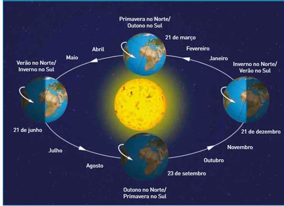

Sol
O imperador do sistema solar.
Últimos Artigos:
Sol - O Imperador do sistema solar.
Estrelas são grandes esferas de plasma, mantidas por sua própria gravidade. O Sol é a mais famosa estrela do nosso planeta, por ser o centro do sistema em que vivemos.
Últimos Artigos:

Matéria Escura - O maior mistério da astrofísica.
Estrelas são grandes esferas de plasma, mantidas por sua própria gravidade. As estrelas emitem luz, calor e outros tipos de radiação em razão dos
Imagem do Sol divulgada pela NASA.
O Sol é o principal corpo celeste do nosso sistema solar, isso porque ele não é apenas o maior entre, como ele também é o centro dele, ou seja, todos os outros corpos e matérias encontradas giram ao seu entorno seguindo a teoria científica héliocentrista, como uma espécie de chefe dos planetas do sistema que nosso planeta está introduzido.
O sol ao longo dos anos tem sido mais e mais representado como uma estrela, já que sua massa, idade, tamanho e composição dão a entender isso. Ele queima a uma distância de 150 milhões de quilômetros da terra, sendo que sua luz demora por volta de 8 minutos e meio para chegar à terra, isso torna o sol o principal corpo junto a lua entre os que impactam diretamente no estilo de vida da terra. Podemos observar isso pela distância que temos do sol, que relacionadas com os movimentos de rotação e translação da terra, influenciam nas estações do ano (Verão, Outono, Inverno, Primavera), nas temperaturas e principalmente nas mudanças de clima e moradia que a população do planeta Terra sofre constantemente. 
Como exemplo dessas mudanças temos os desertos do Saara e o norte do Rio Nilo na África, onde cientistas especulam que por mudanças relacionadas ao Sol todo o ambiente se tornou um deserto. É importante lembrar que o Sol sozinho não é capaz de mudar tão bruscamente a geografia da terra, mesmo sendo o maior responsável por parte destas mudanças O sol é conhecido por emanar radiação solar e isso ser prejudicial a pele, por isso a atmosfera terrestre se encontra numa relação perfeita com o sol pois ela filtra os raios de radiação e torna a luz solar não só limpa como também necessária para nossa sobrevivência.
O sol é conhecido por emanar radiação solar e isso ser prejudicial a pele, por isso a atmosfera terrestre se encontra numa relação perfeita com o sol pois ela filtra os raios de radiação e torna a luz solar não só limpa como também necessária para nossa sobrevivência.
Composição e perigos da exposição ao sol.
Mesmo sendo uma estrela o sol se caracteriza principalmente como uma de muitas das chamadas “anãs vermelhas”, sendo que ele é menor que algumas outras estrelas descobertas em outras galáxias, porém é 85% mais brilhante que a maioria dos outros tipos de estrelas no universo até então observados, trazendo as condições perfeitas de temperatura e distância, além de estar em constante movimento mesmo que seja impossível de perceber com olhares humanos. Como provas de sua movimentação temos os eclipses e as variações de distância entre a terra e o sol a cada ano.
Artigos relacionados
Sistema Solar
Das temperaturas escaldantes de Vênus até o maior vulcão do Sistema Solar em Marte: é hora de conhecer a [...]!
Marte
Das temperaturas escaldantes de Vênus até o maior vulcão do Sistema Solar em Marte: é hora de conhecer a [...]!
Urano
Das temperaturas escaldantes de Vênus até o maior vulcão do Sistema Solar em Marte: é hora de conhecer a [...]!
Jupiter
Das temperaturas escaldantes de Vênus até o maior vulcão do Sistema Solar em Marte: é hora de conhecer a [...]!
Plutão
Das temperaturas escaldantes de Vênus até o maior vulcão do Sistema Solar em Marte: é hora de conhecer a [...]!